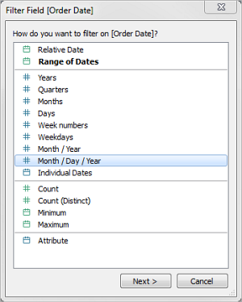
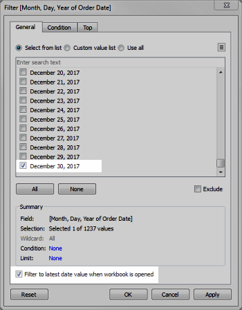

Filter dates
- Filter relative dates: Click Relative dates to define a range of dates that updates based on the date and time you open the view. For example, you may want to see Year to Date sales, all records from the past 30 days, or bugs closed last week. Relative date filters can also be relative to a specific anchor date rather than today.
- Filter a range of dates: Select Range of dates to define a fixed range of dates to filter. For example, you may want to see all orders placed between March 1, 2009 and June 12, 2009.
- Filter discrete dates: Select a discrete date value in the dialog box if you want to include entire date levels. For example, if you select Quarters, you can choose to filter specific quarters (e.g. Q1, Q2, Q3, Q4) from your view, regardless of the year.
Latest date preset: If you want to ensure that only the most recent date in a data source is selected in the filter when the workbook is shared or opened, select a discrete date such as Month/Day/Year or Individual Dates and then, on the General tab, select Filter to latest date value when workbook is opened.


Notes: When you filter to the latest date value, this setting applies only to data source filters in a workbook.
In the order of operations, the latest date filter is global to the workbook, while context filters apply per worksheet. The latest date is determined just after the workbook opens for first use, after data source filters, but before context filters. At that point the date is set, and the latest date preset is used as a dimension filter.
If you are using additional filters in views (including relative date filters and context filters), the latest date value setting may result in an empty view with no data when those additional filters do not select data from the latest date in the database.
On Workbench presets are applied when the view first loads in the browser, but not when the browser or data is refreshed.
- Filter individual dates: Select Individual dates to filter specific dates from your view.
- Additional date filter options: When you select Relative dates or Range of dates, the Filter dialog box opens. In that dialog box, you can define a Starting date or Ending date. You can also select Special to include null dates, non-null dates, or all dates.
Created with the Personal Edition of HelpNDoc: Produce Kindle eBooks easily